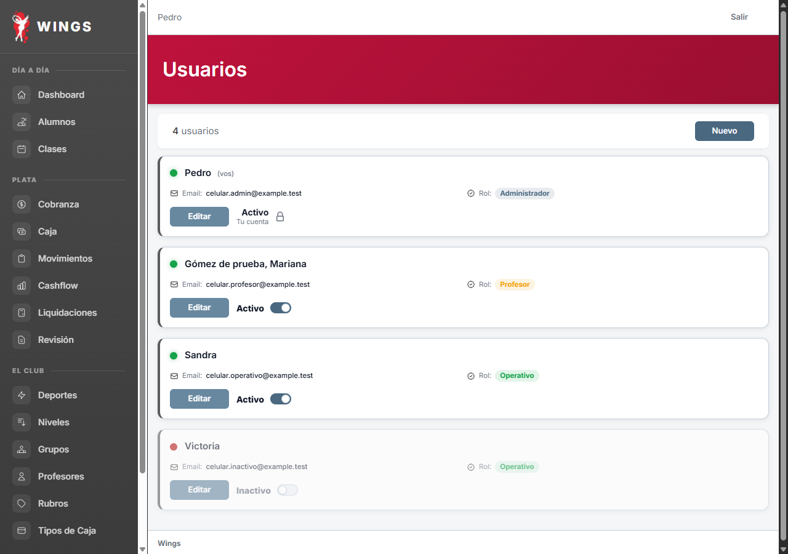
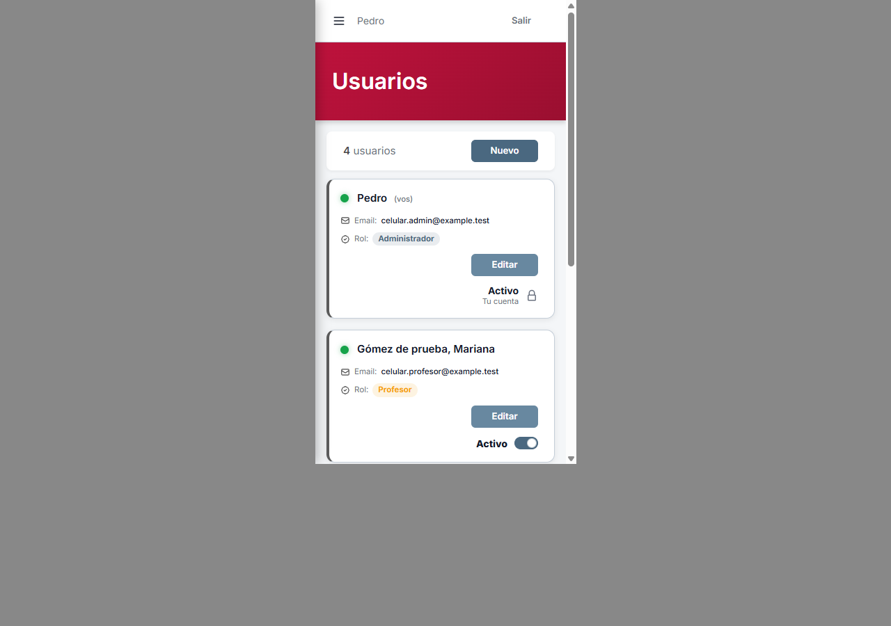
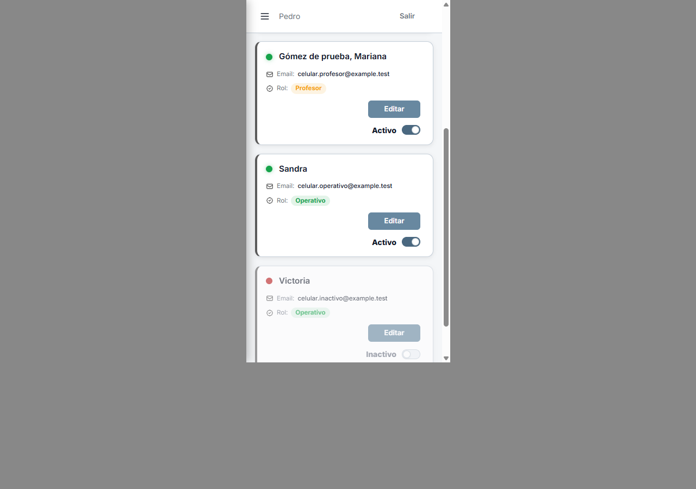
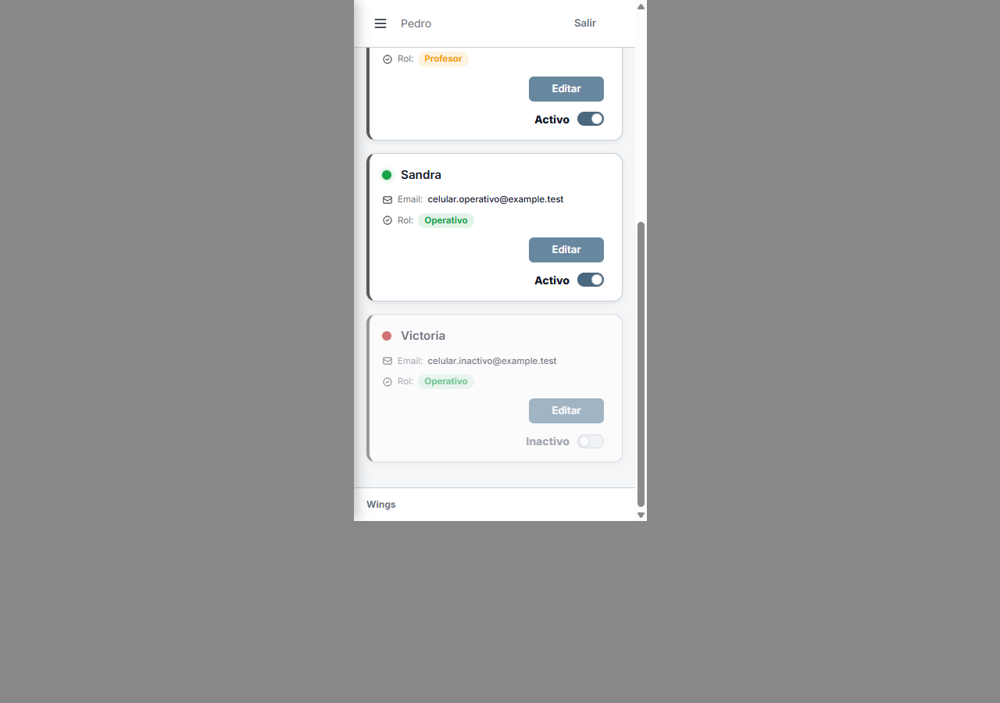
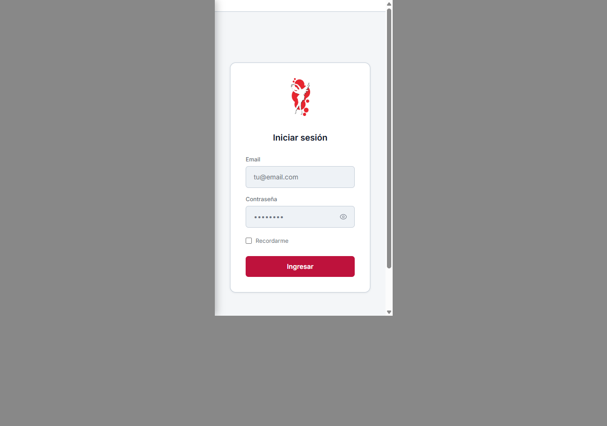

Usuarios · Nombre de la persona y rol
Carlos: Ok, APROBADO A32. Aplicado y cerrado.
Pedro, Sandra y Gómez de prueba, Mariana. El rol ocupa la misma columna en todas las tarjetas. Se quitó el dato Profesor repetido: su nombre identifica la tarjeta y el rol indica Profesor.
Escritorio

Celular · 375 px




Control del marco

08/10/2026 · Capturas de Laravel real y usuarios ficticios. Mediciones · Entrega y estado.